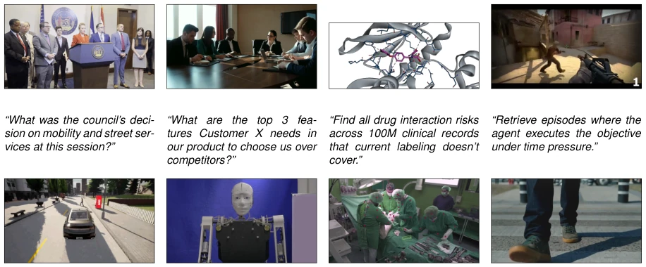
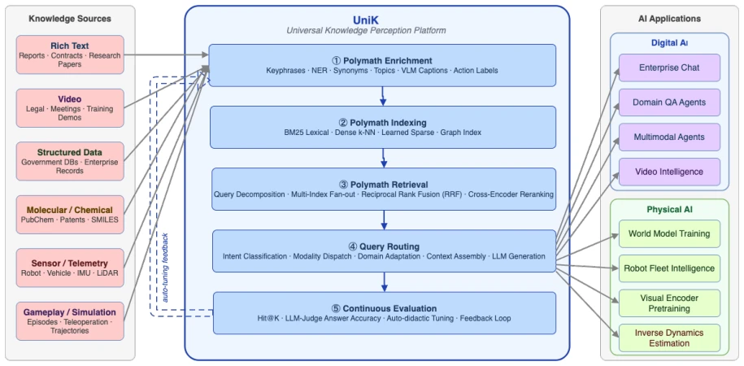
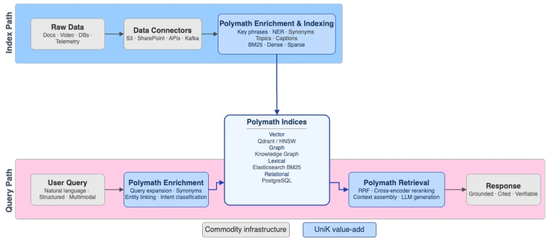
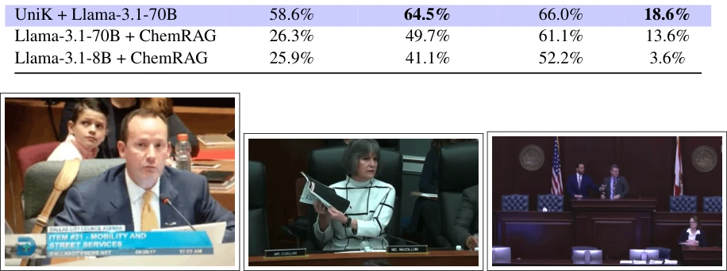

UniK: Universal Knowledge Perception for Digital and Physical AI
Nirmit Desai, Kunal Sawarkar, Aditya Mahakali, Dongkon Lee, Kevin Park, Eric Song abspdf
论文点评Review
这篇论文试图用“知识感知”这个新瓶装旧酒，把 RAG 包装成数字和物理 AI 的共同基础设施。UniK 的核心卖点是不用微调就能用 70B 开源模型打爆大几倍的闭源模型，听起来很性感，但本质上还是靠多路召回融合（Polymath Retrieval）和自动增强（Enrichment）来弥补检索质量的短板。作者很聪明地把物理 AI 的数据清洗问题也拉进来，说世界模型训练也是检索问题，这逻辑通顺但有点偷换概念——毕竟机器人要的是物理规律，不是文档。不过，在政府数据和法律视频这种长尾、私有数据上，UniK 确实比纯靠参数记忆的 GPT-5 强，这点值得肯定。缺点是“通用”可能有点夸大，不同模态的增强器还是得定制，而且物理 AI 部分的实验全是理论推演，没给真机数据。
This paper attempts to put old wine in new bottles using the concept of "knowledge-awareness", packaging RAG as a common infrastructure for both digital and physical AI. UniK's core selling point is that it can crush closed-source models several times larger without fine-tuning using a 70B open-source model; it sounds very sexy, but essentially relies on multi-path retrieval fusion (Polymath Retrieval) and automatic enrichment (Enrichment) to compensate for shortcomings in retrieval quality. The authors cleverly incorporate the physical AI data cleaning issue, stating that world model training is also a retrieval problem; this logic is coherent but involves some concept substitution—after all, robots require physical laws, not documents. However, on long-tail, private data such as government data and legal videos, UniK is indeed stronger than GPT-5 which relies purely on parameter memory, a point worth affirming. The downside is that "general" might be somewhat exaggerated, enhancers for different modalities still require customization, and the experiments in the physical AI part are all theoretical deductions without providing real machine data.
研究动机Motivation
论文指出数字 AI（企业知识库问答）和物理 AI（机器人世界模型）面临共同的瓶颈：知识感知。95% 的企业 AI 试点失败并非模型能力不足，而是知识无法被有效访问 [14]。现有 RAG 在大规模语料下表现退化，密集检索存在“枢纽问题”（hubness），且通用嵌入模型无法处理专业领域词汇（如化学 SMILES 字符串）[18, 5]。物理 AI 同样需要检索语义相关且物理有效的训练片段，但现有方法依赖人工标注，无法处理海量视频和遥测数据。LeCun 区分了感知与理解，本文认为感知层才是当前瓶颈 [13]。
The paper points out that digital AI (enterprise knowledge base Q&A) and physical AI (robot world models) face a common bottleneck: knowledge awareness. 95% of enterprise AI pilot failures are not due to insufficient model capability, but rather knowledge cannot be effectively accessed [14]. Existing RAG degrades under large-scale corpora, dense retrieval suffers from the "hubness" problem, and general embedding models cannot handle domain-specific vocabulary (such as chemical SMILES strings) [18, 5]. Physical AI also needs to retrieve semantically relevant and physically valid training segments, but existing methods rely on manual annotation and cannot handle massive video and telemetry data. LeCun distinguishes between perception and understanding, this paper argues that the perception layer is the current bottleneck [13].
UniK adopts a unified architecture, containing six core operations: discovery, ingestion, enrichment, indexing, retrieval, and evaluation. Data flow is divided into indexing path and query path. In the indexing path, raw data enters Polymath Enrichment via Data Connectors, automatically extracting key phrases, entities, synonyms, and topics using KeyBERT, YAKE, spaCy NER, and VLM, building multi-type indexes (BM25 lexical, dense semantic, sparse learning). In the query path, user queries are routed to Polymath Router after enrichment, fusing multi-index results via Reciprocal Rank Fusion (RRF). The core innovation lies in "Polymath Retrieval," which does not rely on a single modality but combines multiple signals. For physical AI, the enrichment module is adapted for action types, kinematic features, etc., but the architecture remains unchanged. The system requires no task-specific fine-tuning, relying on multi-path retrieval fusion to solve long-tail and domain vocabulary problems. Additionally, the paper proposes the concept of "Auto-didactic Retrieval," aiming to automatically optimize hyperparameters, but currently still requires manual configuration.
Evaluated in five digital AI domains (medical, open-domain, chemistry, legal video, government data). Using Llama-3.3-70B-Instruct as the generation model. On government open data, UniK achieves 76% RAG accuracy, far exceeding GPT-5's 47% [3]. Medical QA reaches 77.9%, superior to GPT-3.5+RAG [9]. In the chemistry domain, it surpasses GPT-4o on MolInstruct [1]. Legal video retrieval performs best on the Seattle CDP dataset. The physical AI part does not provide real machine experiments, only arguing architecture applicability through three use cases (game/telemetry, self-view video, robot telemetry). Ablation experiments show that UniK enrichment significantly improves retrieval accuracy, especially in domains with large semantic gaps. UniK-Realtime configuration reaches 91.2% hit@10 on HotpotQA, latency only 68ms.
其他图片Other Figures

Figure 1: The knowledge perception problem across eight enterprise and AI domains. Row 1 (left to right): city council proceedings, corporate sales meeting, pharmaceutical drug interaction records, and gameplay training data. Row 2: autonomous driving simulation, humanoid robot demonstration, surgical video with EHR cross-reference, and body-worn camera footage. In every case, relevant knowledge is locked in unindexed video streams, unstructured documents, or heterogeneous sensor and telemetry logs. The bottleneck is knowledge perception, not model capability.

Figure 2: The UniK platform: a common knowledge infrastructure for digital and physical AI. Six het- erogeneous knowledge source modalities (left) feed into five core engine operations (center, numbered 1–5): Polymath Enrichment, Polymath Indexing, Polymath Retrieval, Query Routing, and Continuous Evaluation, with an auto-didactic feedback loop from Continuous Evaluation back to Enrichment. The same platform serves both digital AI applications (Enterprise Chat, Domain QA Agents, Multimodal Agents, Video Intelligence) and physical AI applications (World Model Training, Robot Fleet Intelli- gence, Visual Encoder Pretraining, Inverse Dynamics Estimation) without structural modification.

Figure 3: End-to-end UniK pipeline. Index path (top, blue background): raw data flows through Data Connectors into Polymath Enrichment & Indexing (UniK, blue)—which applies KeyBERT, YAKE, spaCy NER, VLMs, and multi-type index construction (BM25, dense, sparse)—and populates the cen- tral Polymath Indices (vector, graph, lexical, relational). Query path (bottom, green background): a user query is first enriched by Polymath Enrichment (query expansion, entity linking, intent classifica- tion), then fed into the Polymath Indices from the left; results exit right into Fusion & Ranking (RRF, cross-encoder reranking, context assembly), which produces the final grounded response. Commodity components (gray) require no modification across domains; UniK value-add (blue) lies in enrichment, multi-ty

Figure 4: UniK legal video intelligence in action on the Seattle City Council proceedings corpus. An- swers are grounded in the indexed transcript, not recalled from model weights.